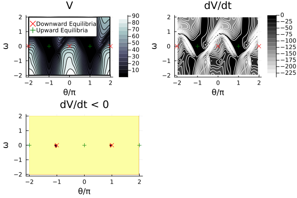
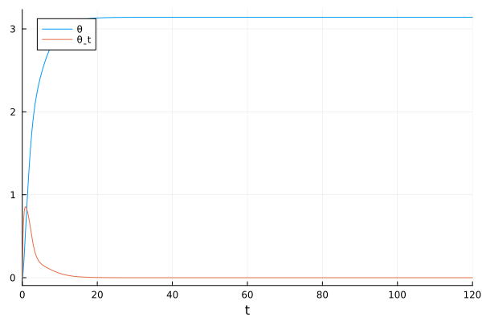
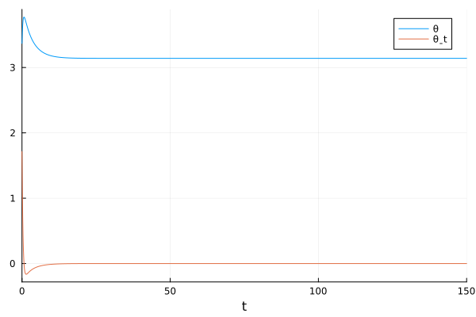

Policy Search on the Driven Inverted Pendulum
In this demonstration, we'll search for a neural network policy to stabilize the upright equilibrium of the inverted pendulum.
The governing differential equation for the driven pendulum is:
\[\frac{d^2 \theta}{dt^2} + 2 \zeta \omega_0 \frac{d \theta}{dt} + \omega_0^2 \sin(\theta) = \tau,\]
where $\theta$ is the counterclockwise angle from the downward equilibrium, $\zeta$ and $\omega_0$ are system parameters, and $\tau$ is our control input—the torque.
We'll jointly train a neural controller $\tau = u \left( \theta, \frac{d\theta}{dt} \right)$ and neural Lyapunov function $V$ which will certify the stability of the closed-loop system.
Copy-Pastable Code
using NeuralPDE, Lux, ModelingToolkit, NeuralLyapunov, ComponentArrays
using ModelingToolkit: inputs
using NeuralLyapunovProblemLibrary
import Boltz.Layers: PeriodicEmbedding
import Optimization, OptimizationOptimisers
using Random, StableRNGs
rng = StableRNG(0)
Random.seed!(200)
######################### Define dynamics and domain ##########################
@named pendulum = Pendulum(; defaults = [0.5, 1.0])
τ, = unbound_inputs(pendulum)
pendulum = mtkcompile(pendulum; inputs = [τ], split = false)
θ, ω = unknowns(pendulum)
bounds = [
θ ∈ (0, 2π),
ω ∈ (-2.0, 2.0)
]
upright_equilibrium = [π, 0.0]
####################### Specify neural Lyapunov problem #######################
# Define neural network discretization
# We use an input layer that is periodic with period 2π with respect to θ
dim_state = length(bounds)
dim_hidden = 20
dim_phi = 2
dim_u = 1
dim_output = dim_phi + dim_u
chain = [Chain(
PeriodicEmbedding([1], [2π]),
Dense(3, dim_hidden, tanh),
Dense(dim_hidden, dim_hidden, tanh),
Dense(dim_hidden, 1)
) for _ in 1:dim_output]
ps, st = Lux.setup(rng, chain)
ps = ps |> ComponentArray |> f64
st = st |> f64
# Define neural network discretization
strategy = QuasiRandomTraining(5000)
discretization = PhysicsInformedNN(chain, strategy; init_params = ps, init_states = st)
# Define neural Lyapunov structure
periodic_pos_def = function (state, fixed_point)
θ, ω = state
θ_eq, ω_eq = fixed_point
return (sin(θ) - sin(θ_eq))^2 + (cos(θ) - cos(θ_eq))^2 + 0.1 * (ω - ω_eq)^2
end
structure = PositiveSemiDefiniteStructure(
dim_phi;
pos_def = (x, x0) -> log(1.0 + periodic_pos_def(x, x0))
)
structure = add_policy_search(structure, dim_u)
minimization_condition = DontCheckNonnegativity(check_fixed_point = false)
# Define Lyapunov decrease condition
decrease_condition = AsymptoticStability(strength = periodic_pos_def)
# Construct neural Lyapunov specification
spec = NeuralLyapunovSpecification(structure, minimization_condition, decrease_condition)
############################# Construct PDESystem #############################
@named pde_system = NeuralLyapunovPDESystem(
pendulum,
bounds,
spec;
fixed_point = upright_equilibrium
)
######################## Construct OptimizationProblem ########################
prob = discretize(pde_system, discretization)
########################## Solve OptimizationProblem ##########################
res = Optimization.solve(prob, OptimizationOptimisers.Adam(0.01); maxiters = 300)
prob = Optimization.remake(prob, u0 = res.u)
res = Optimization.solve(prob, OptimizationOptimisers.Adam(0.001); maxiters = 300)
###################### Get numerical numerical functions ######################
net = discretization.phi
_θ = res.u.depvar
open_loop_pendulum_dynamics = ODEInputFunction(pendulum)
params = setdiff(parameters(pendulum), unbound_inputs(pendulum))
ics = initial_conditions(pendulum)
p = [Symbolics.value(ics[param]) for param in params]
V, V̇ = get_numerical_lyapunov_function(
net,
_θ,
structure,
open_loop_pendulum_dynamics,
upright_equilibrium;
p
)
u = get_policy(net, _θ, dim_output, dim_u)Detailed description
In this example, we'll use the Pendulum model in NeuralLyaupnovProblemLibrary.jl.
using ModelingToolkit, NeuralLyapunovProblemLibrary
using ModelingToolkit: unbound_inputs
@named pendulum = Pendulum(; defaults = [0.5, 1.0])
τ, = unbound_inputs(pendulum)
pendulum = mtkcompile(pendulum; inputs = [τ], split = false)Model pendulum:
Equations (2):
2 standard: see equations(pendulum)
Unknowns (2): see unknowns(pendulum)
θ(t)
θˍt(t)
Parameters (3): see parameters(pendulum)
ζ
ω_0
τ(t) [defaults to missing]Since the angle $\theta$ is periodic with period $2\pi$, our box domain will be one period in $\theta$ and an interval in $\frac{d\theta}{dt}$.
upright_equilibrium = [π, 0.0]
θ, ω = unknowns(pendulum)
bounds = [
θ ∈ (0, 2π),
ω ∈ (-2.0, 2.0)
]2-element Vector{Symbolics.VarDomainPairing}:
Symbolics.VarDomainPairing(θ(t), 0.0 .. 6.283185307179586)
Symbolics.VarDomainPairing(θˍt(t), -2.0 .. 2.0)We'll use an architecture that's $2\pi$-periodic in $\theta$ so that we can train on just one period of $\theta$ and don't need to add any periodic boundary conditions. To achieve that, we use Boltz.Layers.PeriodicEmbedding([1], [2pi]), enforces 2pi-periodicity in input number 1. Additionally, we include output dimensions for both the neural Lyapunov function and the neural controller.
Other than that, setting up the neural network using Lux and NeuralPDE training strategy is no different from any other physics-informed neural network problem. For more on that aspect, see the NeuralPDE documentation.
using Lux, ComponentArrays
using Boltz.Layers: PeriodicEmbedding
using StableRNGs
# Stable random number generator for doc stability
rng = StableRNG(0)
# Define neural network discretization
# We use an input layer that is periodic with period 2π with respect to θ
dim_state = length(bounds)
dim_hidden = 20
dim_phi = 2
dim_u = 1
dim_output = dim_phi + dim_u
chain = [Chain(
PeriodicEmbedding([1], [2π]),
Dense(dim_state + 1, dim_hidden, tanh),
Dense(dim_hidden, dim_hidden, tanh),
Dense(dim_hidden, 1)
) for _ in 1:dim_output]
ps, st = Lux.setup(rng, chain)
ps = ps |> ComponentArray |> f64
st = st |> f64using NeuralPDE
# Define neural network discretization
strategy = QuasiRandomTraining(5000)
discretization = PhysicsInformedNN(chain, strategy; init_params = ps, init_states = st)We now define our Lyapunov candidate structure along with the form of the Lyapunov conditions we'll be using.
The default Lyapunov candidate from PositiveSemiDefiniteStructure is:
\[V(x) = \left( 1 + \lVert \phi(x) \rVert^2 \right) \log \left( 1 + \lVert x \rVert^2 \right),\]
which structurally enforces positive definiteness. We'll modify the second factor to be $2\pi$-periodic in $\theta$:
using NeuralLyapunov
# Define neural Lyapunov structure
periodic_pos_def = function (state, fixed_point)
θ, ω = state
θ_eq, ω_eq = fixed_point
return (sin(θ) - sin(θ_eq))^2 + (cos(θ) - cos(θ_eq))^2 + 0.1 * (ω - ω_eq)^2
end
structure = PositiveSemiDefiniteStructure(
dim_phi;
pos_def = (x, x0) -> log(1.0 + periodic_pos_def(x, x0))
)In addition to representing the neural Lyapunov function, our neural network must also represent the controller. For this, we use the add_policy_search function, which tells NeuralLyapunov to expect dynamics with a control input and to treat the last dim_u dimensions of the neural network as the output of our controller.
structure = add_policy_search(structure, dim_u)Since our Lyapunov candidate structurally enforces positive definiteness, we use DontCheckNonnegativity.
minimization_condition = DontCheckNonnegativity(check_fixed_point = false)
# Define Lyapunov decrease condition
decrease_condition = AsymptoticStability(strength = periodic_pos_def)
# Construct neural Lyapunov specification
spec = NeuralLyapunovSpecification(structure, minimization_condition, decrease_condition)
# Construct PDESystem
@named pde_system = NeuralLyapunovPDESystem(
pendulum,
bounds,
spec;
fixed_point = upright_equilibrium
)PDESystem
Equations: Symbolics.Equation[max(0, (1.0 + cos(θ))^2 + (-1.2246467991473532e-16 + sin(θ))^2 + 0.1(θˍt^2) + (1 + φ2(θ, θˍt)^2 + φ1(θ, θˍt)^2)*(((-2(1.0 + cos(θ))*sin(θ) + 2cos(θ)*(-1.2246467991473532e-16 + sin(θ)))*θˍt) / (1.0 + (1.0 + cos(θ))^2 + (-1.2246467991473532e-16 + sin(θ))^2 + 0.1(θˍt^2)) + (0.2(φ3(θ, θˍt) - NaNMath.sin(θ)*(ω_0^2) - 2ζ*θˍt*ω_0)*θˍt) / (1.0 + (1.0 + cos(θ))^2 + (-1.2246467991473532e-16 + sin(θ))^2 + 0.1(θˍt^2))) + ((2φ2(θ, θˍt)*Differential(θ, 1)(φ2(θ, θˍt)) + 2φ1(θ, θˍt)*Differential(θ, 1)(φ1(θ, θˍt)))*θˍt + (2φ2(θ, θˍt)*Differential(θˍt, 1)(φ2(θ, θˍt)) + 2φ1(θ, θˍt)*Differential(θˍt, 1)(φ1(θ, θˍt)))*(φ3(θ, θˍt) - NaNMath.sin(θ)*(ω_0^2) - 2ζ*θˍt*ω_0))*log(1.0 + (1.0 + cos(θ))^2 + (-1.2246467991473532e-16 + sin(θ))^2 + 0.1(θˍt^2))) ~ 0]
Boundary Conditions: Symbolics.Equation[φ3(3.141592653589793, 0.0) - 1.2246467991473532e-16(ω_0^2) ~ 0]
Domain: Symbolics.VarDomainPairing[Symbolics.VarDomainPairing(θ, 0.0 .. 6.283185307179586), Symbolics.VarDomainPairing(θˍt, -2.0 .. 2.0)]
Dependent Variables: Symbolics.Num[φ1(θ, θˍt), φ2(θ, θˍt), φ3(θ, θˍt)]
Independent Variables: Symbolics.Num[θ, θˍt]
Parameters: SymbolicUtils.BasicSymbolicImpl.var"typeof(BasicSymbolicImpl)"{SymbolicUtils.SymReal}[ζ, ω_0]
Default Parameter ValuesModelingToolkitBase.AtomicArrayDict{SymbolicUtils.BasicSymbolicImpl.var"typeof(BasicSymbolicImpl)"{SymbolicUtils.SymReal}, Dict{SymbolicUtils.BasicSymbolicImpl.var"typeof(BasicSymbolicImpl)"{SymbolicUtils.SymReal}, SymbolicUtils.BasicSymbolicImpl.var"typeof(BasicSymbolicImpl)"{SymbolicUtils.SymReal}}}(ζ => 0.5, ω_0 => 1.0)Now, we solve the PDESystem using NeuralPDE the same way we would any PINN problem.
prob = discretize(pde_system, discretization)
using Optimization: solve, remake
using OptimizationOptimisers: Adam
res = solve(prob, Adam(0.01); maxiters = 300)
prob = remake(prob, u0 = res.u)
res = solve(prob, Adam(0.001); maxiters = 300)
net = discretization.phi
_θ = res.u.depvarComponentVector{Float64,SubArray...}(φ1 = (layer_1 = Float64[], layer_2 = (weight = [-0.1125571373549845 0.290621559573769 -0.7834771272187013; 0.06472160680586296 0.45204880763214894 0.29591377589642287; … ; -0.9286296985018883 0.7156221709969105 -1.4045064721483234; -0.3868473431357837 -1.1583434838877877 -0.9577606822805488], bias = [-0.585890029267402, 0.2381455565662922, 0.5552389972454517, 0.673272752229866, 0.37668561880655804, 0.41534270044696664, -0.4863849538189695, -0.37748374324879935, -0.2996440902122675, 0.07545934345443113, -0.8956959886723936, -0.30038796266748036, -0.017414240682386003, -0.671389746085868, 0.10520317777691317, 0.501973502632958, -0.48234986999880036, -0.3011388725182687, -0.34496895741037686, -0.7192148354580964]), layer_3 = (weight = [-0.3323478074551568 -0.31174759346095515 … -0.18119098275591047 -0.17923428936372632; -0.31289352290159894 -0.6084585657929767 … -0.35101152558551024 -0.353790883354911; … ; 0.01876320618750455 -0.7602770473932476 … -0.4744596929527511 0.8963831146677059; -0.18944763307313628 0.36683770536657706 … -0.3131464748792653 0.4514048907751413], bias = [0.08896819907631319, -0.056250922593093736, 0.10659946903823121, 0.07428590367092298, -0.1686485267730383, 0.04084477846013649, -0.4449530620472138, -0.0811960668148675, -0.2524641139834023, 0.15521662395876396, 0.1428991047172464, 0.29308982410148626, 0.2891817015368451, -0.06190635066263705, -0.20479042901178693, 0.32526196625446185, 0.03978182375302404, -0.27027514630972566, -0.2809236639078272, 0.36770013114536176]), layer_4 = (weight = [-0.14714912103776562 -0.221686157448047 … -0.23228277884929865 -0.10189862845159729], bias = [0.0026481002831300446])), φ2 = (layer_1 = Float64[], layer_2 = (weight = [0.645883613647887 1.2414356473023886 -0.2875272392073461; 0.3406535525050424 0.6945717858518139 -0.15594172390551678; … ; -1.474667432251514 0.4260000174056562 1.3870323194237932; 1.2459151371372907 -0.9747875940692152 -1.635980636830756], bias = [0.2849909047180808, -0.01149700002445395, -0.15864796246019647, -0.3304615564310351, 0.367649631366164, -0.00011767152014725946, -0.6548048263219726, 0.2497751270206874, -0.09473541422856242, -0.494298023983749, 0.5070791364015829, 0.03397570040506479, -0.078542708171511, -0.26025837028007354, 0.2539281939966237, -0.30533659679180314, -0.1671957364967064, 0.4742759352344412, -0.11087286231373782, 0.014366087903231765]), layer_3 = (weight = [-0.08437626637553204 -0.5629786935696497 … -0.7344636198840008 0.06507062884328438; 0.10771134608181047 -0.4278550255786202 … 0.1478147171617956 -0.08936447086729492; … ; -0.8151609741190495 -0.2782408215718599 … 0.480329323461838 -0.16713449144068787; -0.44220957129698324 -0.4338642909810042 … 0.293449587674728 -0.8686177700752995], bias = [0.030963709295273357, 0.16729800388112717, 0.28239764759143343, -0.38172333089693566, -0.3823240894429731, 0.14693357658062445, 0.48907672904403615, 0.5255252602830949, 0.38473991633675025, -0.1264825380675, -0.009304697057184357, -0.07017503571496479, 0.21437410337135662, 0.4073659714286793, 0.4275345779127738, 0.07045340953045896, -0.3038529616125329, -0.05727614672369622, 0.224440866216861, -0.01911937229625749]), layer_4 = (weight = [0.15857241775947833 0.45724923450258204 … 0.34627146163531247 0.28908367133196156], bias = [0.4639558026113704])), φ3 = (layer_1 = Float64[], layer_2 = (weight = [1.39110095129829 -0.6584498269868966 -1.4450293612377278; -0.9394545903692163 -0.4649420863645835 -0.8026605101641691; … ; -1.0130556362392487 -0.911399714821922 1.3285926736065654; -0.4478270760034564 1.4289095662629896 -0.0416027236625186], bias = [0.373586981343261, 0.5163866341920407, 0.49688773005229175, 0.45411502470057097, 0.36664936815747706, -0.5278474674760746, -0.2431158891557875, 0.5957356559158411, -0.1745842198408583, -0.6109700487165781, -0.007064111329296675, -0.18002234922054275, 0.07762964086632795, -0.04830460870339894, -0.5574379682436097, 0.461400739331903, -0.5421855142130221, 0.5805176520236203, -0.32758592758557487, 0.6406302096685053]), layer_3 = (weight = [0.7581853432775075 -0.18731694500358628 … 0.5556322635139312 -0.8885666087208478; -0.3089650354659326 0.17540160134820218 … 0.7097736159931545 -0.06347350786451215; … ; 0.19466229089561407 -0.607394414292967 … 0.27605530401172307 -0.16656924176968044; 0.571539229254042 0.354497094390555 … -0.39651783082900705 0.011943763445408232], bias = [-0.2006932521465501, -0.2283750794175896, -0.35657900307545154, -0.04891881987287066, -0.3089483642535058, 0.1273119206510505, 0.251097518535075, 0.1362592105180077, 0.031063286589036735, 0.02087048770895506, 0.1868587423121085, 0.25042723337225736, 0.05252958387597737, 0.12065309160516717, -0.16599379838454237, -0.2035041585720616, 0.06478876267187596, 0.03392735745599392, -0.07831170289667176, -0.26738537766297293]), layer_4 = (weight = [-0.12957896248260398 0.30028307058512016 … -0.09744360702211005 -0.4071975641445275], bias = [0.24725225303035095])))We can use the result of the optimization problem to build the Lyapunov candidate as a Julia function, as well as extract our controller, using the get_policy function.
open_loop_pendulum_dynamics = ODEInputFunction(pendulum)
params = setdiff(parameters(pendulum), unbound_inputs(pendulum))
ics = initial_conditions(pendulum)
p = [Symbolics.value(ics[param]) for param in params]
V, V̇ = get_numerical_lyapunov_function(
net,
_θ,
structure,
open_loop_pendulum_dynamics,
upright_equilibrium;
p
)
u = get_policy(net, _θ, dim_output, dim_u)Now, let's evaluate our controller. First, we'll get the usual summary statistics on the Lyapunov function and plot $V$, $\dot{V}$, and the violations of the decrease condition.
lb = [0.0, -2.0];
ub = [2π, 2.0];
xs = (-2π):0.1:(2π)
ys = lb[2]:0.1:ub[2]
states = Iterators.map(collect, Iterators.product(xs, ys))
V_samples = vec(V(reduce(hcat, states)))
V̇_samples = vec(V̇(reduce(hcat, states)))
# Print statistics
println("V(π, 0) = ", V(upright_equilibrium))
println(
"f([π, 0], u([π, 0])) = ",
open_loop_pendulum_dynamics(upright_equilibrium, u(upright_equilibrium), p, 0.0)
)
println(
"V ∋ [",
min(V(upright_equilibrium), minimum(V_samples)),
", ",
maximum(V_samples),
"]"
)
println(
"V̇ ∋ [",
minimum(V̇_samples),
", ",
max(V̇(upright_equilibrium), maximum(V̇_samples)),
"]"
)V(π, 0) = 0.0
f([π, 0], u([π, 0])) = [0.0, -0.0010448439426487936]
V ∋ [0.0, 91.26048327758342]
V̇ ∋ [-240.7267993618634, 0.04855698096620404]using Plots
p1 = plot(
xs / pi,
ys,
V_samples,
linetype =
:contourf,
title = "V",
xlabel = "θ/π",
ylabel = "ω",
c = :bone_1
);
p1 = scatter!([-2 * pi, 0, 2 * pi] / pi, [0, 0, 0],
label = "Downward Equilibria", color = :red, markershape = :x);
p1 = scatter!(
[-pi, pi] / pi, [0, 0], label = "Upward Equilibria", color = :green, markershape = :+);
p2 = plot(
xs / pi,
ys,
V̇_samples,
linetype = :contourf,
title = "dV/dt",
xlabel = "θ/π",
ylabel = "ω",
c = :binary
);
p2 = scatter!([-2 * pi, 0, 2 * pi] / pi, [0, 0, 0],
label = "Downward Equilibria", color = :red, markershape = :x);
p2 = scatter!([-pi, pi] / pi, [0, 0], label = "Upward Equilibria", color = :green,
markershape = :+, legend = false);
p3 = plot(
xs / pi,
ys,
V̇_samples .< 0,
linetype = :contourf,
title = "dV/dt < 0",
xlabel = "θ/π",
ylabel = "ω",
colorbar = false,
linewidth = 0
);
p3 = scatter!([-2 * pi, 0, 2 * pi] / pi, [0, 0, 0],
label = "Downward Equilibria", color = :green, markershape = :+);
p3 = scatter!([-pi, pi] / pi, [0, 0], label = "Upward Equilibria",
color = :red, markershape = :x, legend = false);
plot(p1, p2, p3)
Now, let's simulate the closed-loop dynamics to verify that the controller can get our system to the upward equilibrium.
First, we'll start at the downward equilibrium:
closed_loop_dynamics = ODEFunction(
(x, p, t) -> open_loop_pendulum_dynamics(x, u(x), p, t);
sys = pendulum
)
using OrdinaryDiffEqTsit5: Tsit5
# Starting still at bottom ...
downward_equilibrium = zeros(2)
ode_prob = ODEProblem(closed_loop_dynamics, downward_equilibrium, [0.0, 120.0], p)
sol = solve(ode_prob, Tsit5())
plot(sol)
# ...the system should make it to the top
θ_end, ω_end = sol.u[end]
x_end, y_end = sin(θ_end), -cos(θ_end)
[x_end, y_end, ω_end] # Should be approximately [0.0, 1.0, 0.0]3-element Vector{Float64}:
0.001339942145950233
0.9999991022771197
-3.468044868093959e-7Then, we'll start at a random state:
# Starting at a random point ...
x0 = lb .+ rand(2) .* (ub .- lb)
ode_prob = ODEProblem(closed_loop_dynamics, x0, [0.0, 150.0], p)
sol = solve(ode_prob, Tsit5())
plot(sol)
# ...the system should make it to the top
θ_end, ω_end = sol.u[end]
x_end, y_end = sin(θ_end), -cos(θ_end)
[x_end, y_end, ω_end] # Should be approximately [0.0, 1.0, 0.0]3-element Vector{Float64}:
0.0013399845859618292
0.9999991022202517
-2.3790545610473557e-7